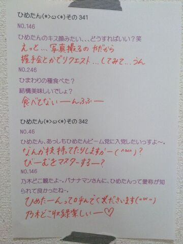

| 2013/12 14 Sat | ひめたん(*>ω<*)そ の380 |

この写真は
もう４ヶ月も前になるのかー
断食と言いながら
ちょーこちょーこ食べてしまったけど
それでも内臓さんたちは休ませてあげられました！
いやーこれくらいなら
３日とかじゃなくて全然続くなー
応援してくれたみんな本当にありがとー( ^ω^ )
あっ真似はしないでね？
みなさんはたくさん食べておっきくなってー◎
◎12/16 月刊ヤングマガジン
乃木坂ちゃんがヤンマガをジャック！してます
楽しかったったー

みんなで歯磨きしてる図
まいまい (深川麻衣ちゃん)
万理華 (伊藤万理華ちゃん)と
お昼寝したよー( ´ ▽ ` )
１時間くらいかな？気持ちよかったー
そう まいまいも日記に書いてたけど
いまね、３人でね、あることをね、
がんばってるんですよー
今日はちょっと変化球をと思いまして
いつもの質問返しじゃなくて
よく聞かれる握手会に関する質問を
まとめましたー
参考に...なったらいいな。

 初握手どんなこと話せばいい？
初握手どんなこと話せばいい？
何でもいいよー楽しいよー
ひめたん緊張しちゃうひとだから
積極的に話振ってくださると きゅんってなるー
えっとーそうだなMVの感想とか
乃木どこの感想とかはすごくお勉強になるし
昨日の夜ごはんとか、最近みた夢とか
なんでもいいよー♪
びーむしてくれる？
あんなに近い距離でお話することって
そうないもんねっ
もちろんだよーリクエストしてみてねー
ほかの子推しだけど行ってもいい？
ひめたん的には嬉しいから
ぜひ推しの子に許可を......
あっコソっと来てくれるんなら
そら秘密は守りますよ( ω )にや
どんな服着ていけばいい？
なーんでもいいです！
ぴんくが似合う人ステキーってのは
ずっと言ってることではあります
ひめたんTシャツも嬉しいよー
いまは寒いから ちゃーんと着こんできてねー
歌ってくれる？
いーですよー( ^O^ )
この曲！っ決めてきてくださったら
とてーも助かります♪
覚えてくれる？
なるはやで覚えられるよう
がんばってみるけど
時間かかっちゃったらごめんね(´・_・`)
ひめたんのブログの
コメント欄下２ケタに46を踏んだ方へ
手書きでコメ返するコーナー
＼ ひめたん46 ／

いつもコメントたくさん
ありがとうございます＊
SPL∞ASHのみんな
お疲れさまでした♪♪
(＊´・ω・＊)
コメント(356)
2013/12/14 08:36